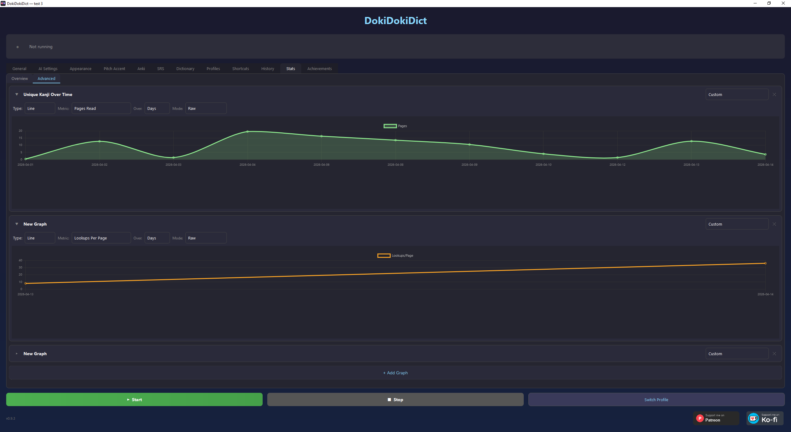

Personal to your vocabulary
Use your reading history, Anki cards, built-in SRS deck, or any combination of them. Change the learning rules before every simulation.
Look up Japanese anywhere on screen, keep track of what you learn, and find the next work that fits your vocabulary.
The Recommender Gallery evaluates hundreds of visual novels, light novels, anime, games, and literary works against your vocabulary from DokiDokiDict, Anki, and the built-in SRS.
Use your reading history, Anki cards, built-in SRS deck, or any combination of them. Change the learning rules before every simulation.
Filter the shelf, choose what matters to you, and rank every matching work by comprehension, useful new words, i+1 material, or learning gain.
Build an ordered path within a page budget or toward a vocabulary target. Mark works as virtually read to add their simulated vocabulary gains to the next ranking without changing your real data.
Open a work's analysis, move through it from 0 to 90%, and see how recognition grows as repeated vocabulary graduates during the work.
Any game, any VN, any manga or book. If there's Japanese text on your screen, DokiDokiDict can read it. No text hooker required.
See readings above every word instantly. MeCab furigana appears in milliseconds, fully offline. As you learn words, their furigana disappears, the scaffolding comes off on its own. Trigger once or let it update continuously.
You can also enable pitch accent coloring. High pitch morae show red, low pitch blue. Works on the overlay, on SRS cards, and in Anki exports.
Press E to export. Word, reading, definition, the sentence you're reading with furigana, a screenshot, and pitch accent, all in one keypress. Field mapping is fully configurable, works with any Anki note type.
A word like 掛ける can have dozens of meanings. Gemini reads what you're reading and puts the right one on top.
Built-in spaced repetition. Review cards in a dedicated tab, or optionally have them appear at natural pauses while you read, no switching apps and no breaking flow. Optionally, words you've seen more than a set number of times get added automatically. With test-before-add mode, the app quizzes you on auto-added words a few pages later, only words you actually retained make it into your deck. Works standalone, Anki not required.
Import any Yomichan dictionary. Stack them, reorder them, switch between profiles with a hotkey. Lock a popup and look up words inside the definition, essential for the monolingual transition.
Optionally, color-underlines every word directly on screen by status: mature Anki card, in your deck, seen N+ times (you set the threshold), or unknown. Know what to look up at a glance. Sentences with exactly one unknown word can be highlighted as i+1. Optionally, looking up a word you should already know hides the definition, you recall it first. A successful recall cements it deeper than reading the English ever would.

See exactly where you are. How many of the top N most common kanji you've seen and how many you've seen M+ times. How many of the top N most common VN words you've seen and how many you've seen M+ times. All thresholds configurable. Kanji grids color-coded by frequency, vocabulary sorted by encounter count, volume of pages read.
There's also an Advanced Stats tab. Stack your own graphs: characters per day, lookups per page, kanji coverage over weeks, SRS retention, reading speed. 25 presets to start from, with custom panel configuration.
Set a daily page goal, starting as low as one. Each week you complete, the app suggests raising it, from 1 page a day up to 50, building up reading endurance and reading speed. Miss a day without losing your streak and build toward long-term milestones such as 10,000 pages.
139 milestones across reading volume, vocabulary, kanji, and VN word frequency. The finals: 30,000 pages read, 10,000 words retained, all 2,136 Jouyou kanji mastered, top 10,000 VN words mastered, 100 pages a day for a month.
Reading ability is built through a lot of reading. DokiDokiDict tracks every page, word, and kanji you encounter, so the work accumulating behind your progress is visible.
As you grow, the scaffolding comes off. Furigana disappears on words you've learned. Definitions hide for words you should already know. The app makes itself less necessary over time. Every feature feeds the next.
Mining happens in the background. Reviews happen between pages. You never leave your book, VN or game.
Your daily reading goal starts wherever you are and grows week by week. The app takes you from 1 page a day to 50.
Yes, completely free.
Dictionary lookup and MeCab furigana run locally. Google Lens, the hosted Recommender Gallery, and optional Gemini features need internet. Select the bundled meikiocr provider if you want OCR to remain local and offline.
Most of them. Because DokiDokiDict uses OCR, it is not tied to a particular engine. Windowed and borderless modes work best, and Magpie compatibility can help with titles that cannot be captured directly.
Yes. Cards are scheduled with FSRS. They can optionally appear while you read, between pages. Words you encounter often can be added automatically. With test-before-add mode, the app quizzes you on auto-added words a few pages later, only words you actually retained make it into your deck. Works standalone, no Anki required.
No. DokiDokiDict has its own SRS. If you already use Anki, full integration is built in, export with one keypress, or let the app mine automatically.
DokiDokiDict uses OCR rather than hooks, so it can work with games, VNs, manga, and other Japanese text without per-title hook setup. It also combines lookups with reading history, word-frequency tracking, i+1 detection, and recall challenges.